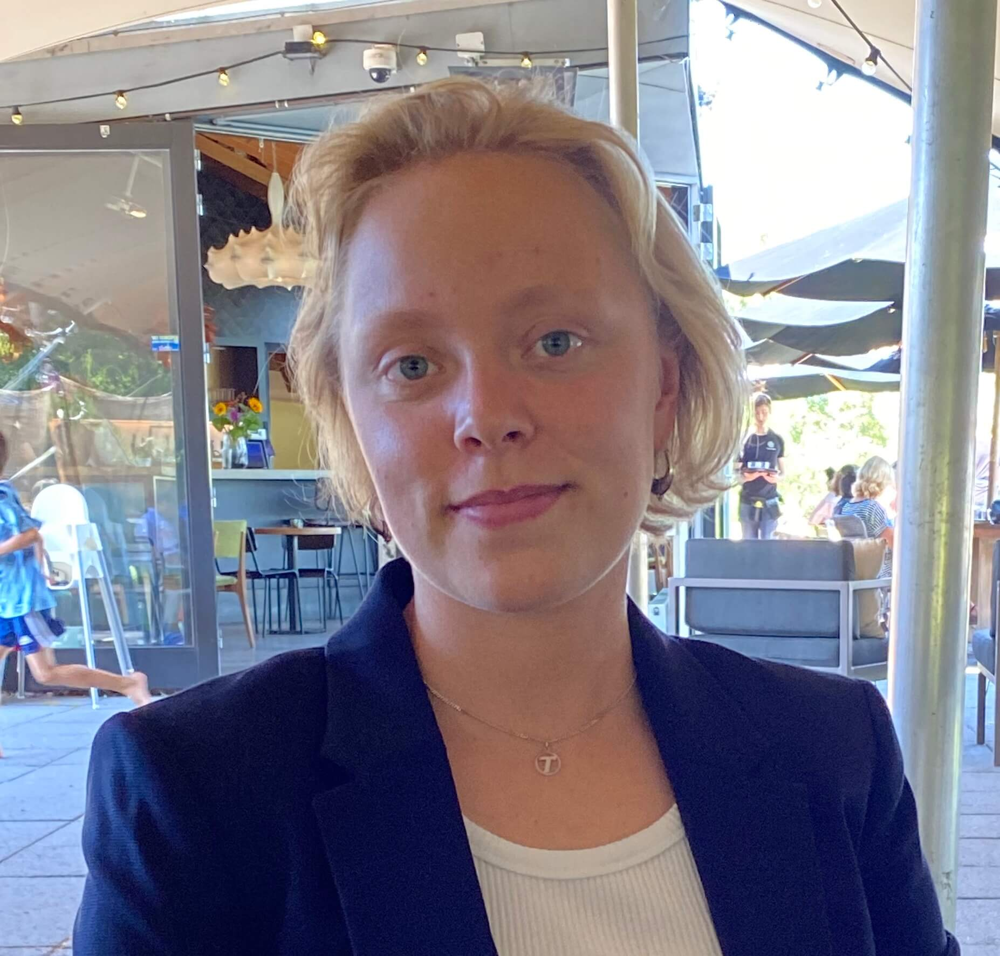
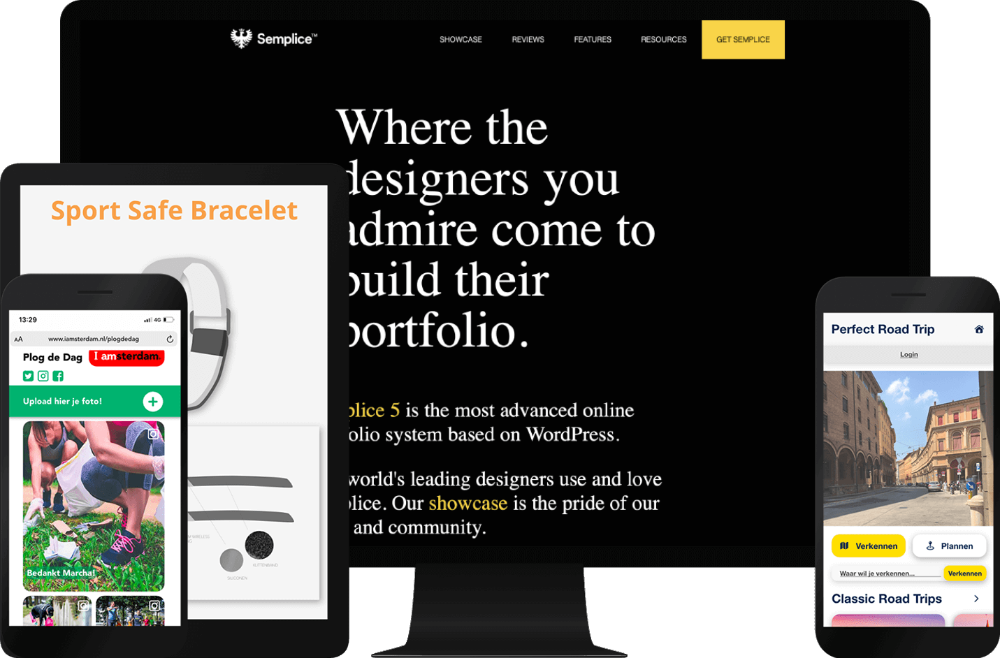

Dit is de Portfolio van Tamar Loffredo
Een ontwerper in Amsterdam
Communicatie en Multimedia Design student
Ik ben 20 jaar en een tweede jaars Communicatie en Multimedia Design student op de Hogeschool van Amsterdam.
Mijn focus binnen ontwerpen ligt vooral op User Experience design, User Interaction design, Commercieel ontwerpen en Frontend Development. In mijn vrije tijd volg ik graag cursussen bij Interaction Design Foundation en LinkedIn Learning.
Naast ontwerpen schrijf ik veel muziek en speel ik veel gitaar. Produceren en samen met mijn vrienden muziek maken in mijn band Distracted Youth zijn één van de manieren waarop ik ook mijn creativiteit uit.
Semplice
Html / CSS / JavaScript

Perfect Road Trip
Website Design

Sport Safe Bracelet
Product Design
Plog de Dag
Website Design